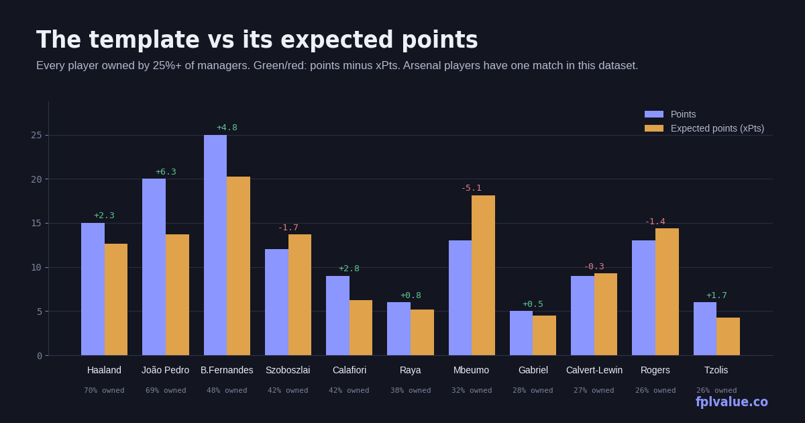

The template, audited
Eleven players are owned by more than a quarter of all FPL managers. This piece puts each of them against their expected points and asks a simple question of the ones falling short: is there a player at the same price, owned by fewer than one in ten, who's doing better on the underlying numbers? It's the dashboard's ownership-versus-points chart written out in prose.

The template, ranked by ownership
| Player | Pos | Price | Own | PPG | Pts | xPts | Δ | xGI |
|---|---|---|---|---|---|---|---|---|
| Haaland MCI | FWD | £15.5m | 69.5% | 7.5 | 15 | 12.7 | +2.3 | 1.42 |
| João Pedro CHE | FWD | £7.6m | 69.4% | 10.0 | 20 | 13.7 | +6.3 | 1.96 |
| B.Fernandes MUN | MID | £12.0m | 47.6% | 12.5 | 25 | 20.2 | +4.8 | 2.84 |
| Szoboszlai LIV | MID | £7.0m | 42.3% | 6.0 | 12 | 13.7 | −1.7 | 1.45 |
| Calafiori ARS * | DEF | £5.6m | 41.5% | 9.0 | 9 | 6.3 | +2.8 | 0.13 |
| Raya ARS * | GKP | £6.0m | 38.0% | 6.0 | 6 | 5.2 | +0.8 | — |
| Mbeumo MUN | MID | £8.0m | 32.3% | 6.5 | 13 | 18.1 | −5.1 | 2.70 |
| Gabriel ARS * | DEF | £8.0m | 27.9% | 5.0 | 5 | 4.5 | +0.5 | 0.06 |
| Calvert-Lewin LEE | FWD | £6.0m | 27.3% | 4.5 | 9 | 9.3 | −0.3 | 1.07 |
| Rogers CHE | MID | £7.5m | 25.9% | 6.5 | 13 | 14.4 | −1.4 | 2.21 |
| Tzolis ARS * | MID | £6.5m | 25.6% | 6.0 | 6 | 4.3 | +1.7 | 0.33 |
* Arsenal players have one match in this dataset; their GW2 fixture at Villa was pulled before kick-off. Ignore their rows until next week.
The top of the template is fine. Haaland's 15 points are slightly ahead of his 12.7 expected, which for a £15.5m player is the concern rather than the reassurance: 1.42 xGI across two games is good but not the 1.0-per-game he's priced for. João Pedro at £7.6m is over-performing by 6.3 points, but 1.96 xGI is the third-highest of any forward, so the floor is high even when the finishing normalises. Bruno Fernandes leads the league in xGI (2.84) and xPts (20.2) and his 25 points are, if anything, about right.
Four highly-owned players are behind their expected points. Two of them shouldn't worry you and two deserve a look.
Mbeumo 32.3% owned · £8.0m · Δ −5.1
This is the biggest gap in the template and it's the wrong way round to be a problem. Thirteen points looks ordinary next to 2.70 xGI — second only to his own team-mate — and an expected total of 18.1 that would place him fourth in the league. He was also sold by 282,000 managers this week, the most of any player, on the basis of one goal and one assist from chances worth nearly three. Verdict: hold. The differential alternatives at his price make the case for him:
| Alternative | Price | Own | PPG | xPts | xGI | xGI/90 |
|---|---|---|---|---|---|---|
| Gibbs-White NFO | £7.9m | 8.7% | 7.5 | 12.7 | 1.02 | 0.51 |
| Cunha MUN | £8.0m | 8.7% | 5.5 | 8.5 | 0.71 | 0.40 |
Gibbs-White has out-scored Mbeumo so far and is a fine player, but his expected points are five lower and his xGI is a third of Mbeumo's. There is no under-owned midfielder at £8m generating anything close to Mbeumo's chances. If you want a differential here, the differential is Mbeumo after this week's sales.
Szoboszlai 42.3% owned · £7.0m · Δ −1.7
The most-owned midfielder under £8m, and the numbers are decent rather than good: 1.45 xGI, 13.7 xPts, 12 actual. He's doing what a £7.0m Liverpool midfielder should. The question is whether the 42% could do better for the same money, and here the answer is a qualified yes:
| Alternative | Price | Own | PPG | xPts | xGI | xGI/90 |
|---|---|---|---|---|---|---|
| Gakpo LIV | £7.0m | 7.2% | 8.5 | 13.2 | 1.10 | 0.62 |
| Foden MCI | £7.0m | 4.4% | 5.0 | 12.5 | 1.84 | 0.97 |
| Dewsbury-Hall EVE | £6.5m | 4.6% | 6.5 | 9.2 | 0.51 | 0.26 |
Gakpo is the same price, the same team, owned by a sixth as many managers, and has 17 points to Szoboszlai's 12 with an almost identical expected total — so the two are interchangeable on the numbers and Gakpo is the one with the goals. Foden is the more interesting one: 1.84 xGI in 171 minutes is 0.97 per 90, the best rate of any midfielder under £8m, and he's returned 10 points from it. At 4.4% ownership that's a proper differential with elite underlying numbers. The risk is minutes, as always with City. Verdict: Szoboszlai is a fine hold, but if you're making a move in this bracket, Foden is the upside play.
Calvert-Lewin 27.3% owned · £6.0m · Δ −0.3
Nine points from nine expected, so nothing is wrong except the ceiling: 1.07 xGI in 180 minutes is 0.54 per 90, respectable for a £6.0m forward and not much more. The template owns him as a budget enabler and he's doing exactly that job. But the alternative at the same price is striking:
| Alternative | Price | Own | PPG | xPts | xGI | xGI/90 |
|---|---|---|---|---|---|---|
| Barry EVE | £5.5m | 3.9% | 5.0 | 14.0 | 2.02 | 1.24 |
| Wissa NEW | £6.1m | 7.2% | 6.0 | 10.5 | 1.37 | 0.72 |
| Gonzalo FUL | £6.0m | 4.4% | 4.0 | 8.1 | 1.02 | 0.51 |
Thierno Barry has 2.02 xGI in 147 minutes — 1.24 per 90, which is Haaland territory — and has converted it into one goal and 10 points. His 14.0 xPts is the highest of any forward under £7m, he's £0.5m cheaper than Calvert-Lewin, and 3.9% of managers own him. The caveat is sample size and a modest Everton attack, and 147 minutes suggests he's not yet playing full games. But this is precisely the profile the under-performers list exists to find: high chance quality, low ownership, low price, behind on points. Verdict: Barry over Calvert-Lewin, and the £0.5m saved is a bonus.
Rogers 25.9% owned · £7.5m · Δ −1.4
Thirteen points from 14.4 expected, 2.21 xGI — fourth among all midfielders. Rogers is playing well and the scoreboard is slightly behind. The same-price alternatives are the Szoboszlai list again (Gakpo and Foden at £7.0m), and neither has a stronger xGI than Rogers does. Verdict: hold, and if anything he's the under-owned member of the template rather than the over-owned one.
Methodology: template defined as ownership ≥ 25%. Alternatives are the same position, priced within £0.7m below to £0.3m above, owned by under 10%, available, and with 120+ minutes, ranked by xPts. xPts and Δ as defined on the metrics page. Data: FPL API after GW2.